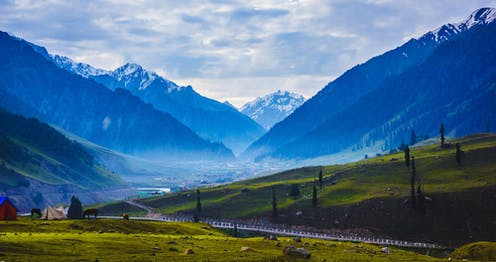

Jammu and Kashmir:

Food:

Kashmiri cuisine is the cuisine of the Kashmir Valley in the Indian subcontinent.
Rice is the staple food of Kashmiris and has been so since ancient times.
Meat, along with rice, is the most popular food item in Kashmir. Meat, along with rice,
some vegetables and salad are prepared on special occasions like Eid only.
Kashmiris consume meat voraciously.Despite being Brahmin, most Kashmiri Hindus are meat eaters.
Vegetation:
In the valley floor of Kashmir, poplar, chinar, maple and vir (willow) are the main species of vegetation which are deciduous in character.
Where soil conditions permit, mixture of broad-leafed deciduous trees, such as maples and oaks,
grow together.
Climate:
The Jammu region has a sub tropical climate and the summer is hot. The temperature starts soaring
in the month of March and is at its peak in the month of April. The maximum
temperature in summer can go as high as 45 degree Celsius. Kashmir is quite pleasant with the temperature varying from 14 to 30 degree Celsius.